Introduction to Maxima
Table of Contents
- 1. Abacus / History of Computers
- 2. Modern Calculator
- 3. But maths is not all about numbers
- 4. Computer Algebra System (CAS)
- 5. Maxima
- 6. Example 1
- 7. Variables and Expression
- 8. Solving Equation
- 9. Plotting
- 10. However sometimes analytical solutions don't exist
- 11. Simplification
- 12. Trignometric Simplification
- 13. Getting Help
- 14. Constants
- 15. Calculus
- 16. Derivative and Integrals
- 17. Differential Equation
- 18. Example: Projectile motion
- 19. Example 2
- 20. Example 2 (Contd)
- 21. Sums and Products
- 22. Example : Economics - Linear Gradient Series
- 23. Example : Economics - Geometric Gradient Series
- 24. Other things
- 25. Packages
- 26. Mathematica
- 27. Maple
- 28. Maxima vs ?
- 29. Bifurcation Diagram / Orbit Diagram
- 30. I don't know what this is
- 31. Lists & Matrices
- 32. Functions
- 33. Control
Presentation by: Bibek Panthi
< Collapse code block
(defun bp/copy-source-block () (interactive) (save-excursion (org-edit-src-code) (kill-ring-save (point-min) (point-max)) (org-edit-src-abort))) (local-set-key (kbd "M-c") 'bp/copy-source-block)
1. Abacus / History of Computers
- Computers started with the need for caluclating/computing
- The First computer
- additions, subtractions
- and with some effort multiplication

Figure 1: Abacus
2. Modern Calculator
- division, square roots, and powers
- Matrix
- Vectors
- Statistics
- and much more
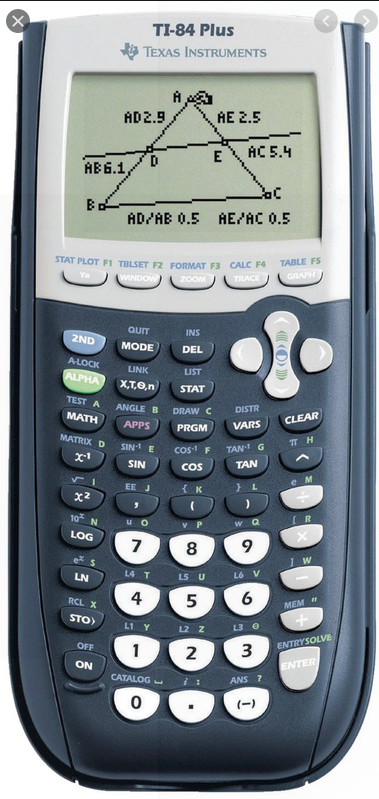
Figure 2: TI-84 Plus
3. But maths is not all about numbers
- Arithmetics
- Numbers
- _Algebra
- Symbols_
- Geometry
- Shapes
4. Computer Algebra System (CAS)
is any mathematical software which manipulates mathematical expressions in a way similar to humans.
- i.e. just as calcuators do arithmetics, CAS do algebra
5. Maxima
Maxima is a free and open source CAS.
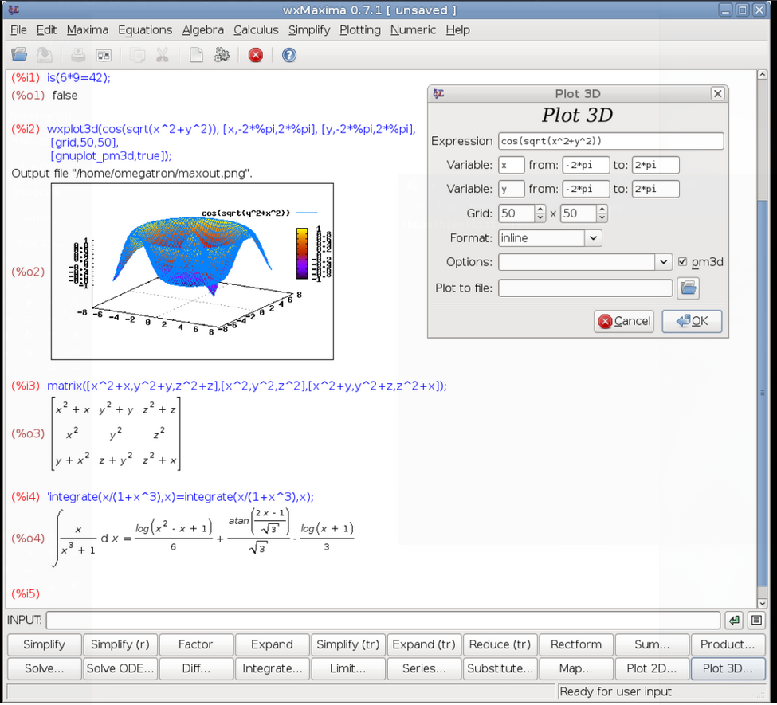
Figure 3: Maxima
6. Example 1
< Collapse code block
print(1+1); print(15*15 + 0.5* ( 12/3));
| 2 |
| 227.0 |
< Collapse code block
tex(2*x+5*x); tex(expand((y+x)^2));
\[7\,x\] \[y^2+2\,x\,y+x^2\]
- Familiar rules of BODMAS
Notice:
- explicit multiplication
- %
7. Variables and Expression
- Assigning values
< Collapse code block
a:5; a+1;
- Evaluating expression with specific values
< Collapse code block
y: 4*a*(x-1); print(tex((y, a:2)));
\[2\]
8. Solving Equation
In calculators we could solve:
< Collapse code block
eqn: x^2 + 4*x + 4 = 0; print(solve(eqn,x));
[x = - 2]
Now we can handle:
< Collapse code block
eqn: a^2*x^2 + 2*a*x + c = 0; tex(solve(eqn,x));
\[\left[ x=-\left({{\sqrt{1-c}+1}\over{a}}\right) , x={{\sqrt{1-c}-1 }\over{a}} \right] \]
solve can find analytical solutions of:
- algebraic equations
- especially polynomial
- trigonometric equations
- system of linear and non-linear equations
- solve for x,y
< Collapse code block
soln: solve ([y=x, y=4*a*x^2],[x,y]); tex((soln, a:1/8));
\[{{1}\over{8}}\]
9. Plotting
< Collapse code block
plot2d ([x, 4*a*x^2],[x,-4,4]),a=1/8;
10. However sometimes analytical solutions don't exist
10.1. Numerical solution
find_roots
< Collapse code block
exp : x^(2/3) + x^(1/2) - 1; solve(exp, x); print(find_root(exp, 0, 100));
0.3021706154056545
- newton
- mnewton (for multiple nonlinear equations)
11. Simplification
11.1. Rational Simplification
ratsimp()
< Collapse code block
expr: x+x^2+2*x * (x - 1); tex(ratsimp(expr));
\[3\,x^2-x\]
< Collapse code block
expr: (x^(a/2) + 1)^2*(x^(a/2) - 1)^2/(x^a - 1); tex(ratsimp(expr));
\[{{x^{2\,a}-2\,x^{a}+1}\over{x^{a}-1}}\]
ratsimp (%)
fullratsimp (%)
12. Trignometric Simplification
trigsimp()
< Collapse code block
print(trigsimp(sin(x)^2 + cos(x)^2));
1
13. Getting Help
- example(factor)
- ? factor
< Collapse code block
expr: x^2 - 1; tex(factor(expr));
\[\left(x-1\right)\,\left(x+1\right)\]
14. Constants
- %pi
- %e
- %i
< Collapse code block
expr: %e^(%pi * %i) + 1; print(expr);
0
15. Calculus
15.1. limit
< Collapse code block
expr: 'limit((1 + 5/x) ^ x, x, inf); tex(expr); tex(ev(expr, nouns));
\[\lim_{x\rightarrow \infty }{\left({{5}\over{x}}+1\right)^{x}}\] \[e^5\]
< Collapse code block
expr: 'limit(sin(x)/x*%e^x/x!, x , 0 ); tex(expr); tex(ev(expr, nouns));
\[\lim_{x\rightarrow 0}{{{e^{x}\,\sin x}\over{x\,x!}}}\] \[1\]
16. Derivative and Integrals
16.1. diff
< Collapse code block
tex(diff(sec(x)*x^2, x, 2));
\[x^2\,\sec x\,\tan ^2x+4\,x\,\sec x\,\tan x+x^2\,\sec ^3x+2\,\sec x\]
Simplify the result:
%,x:1; float(%)
16.2. integrate
< Collapse code block
tex(integrate(sec(x), x));
\[\log \left(\tan x+\sec x\right)\]
17. Differential Equation
17.1. ode2(y'' + 2y' + y = 0)
Ordinary Differential Equation y'' + 2y' + y =0
18. Example: Projectile motion
< Collapse code block
ode2('diff(y,t,2) = -g, y, t); ic2(%o96, t = 0, y = 0, 'diff(y,t) = u); wxplot2d(part(%,2), [t,0,1]), v_0 = 10,g=9.8;
18.1. Numerical solution
19. Example 2
Numerical Solutions
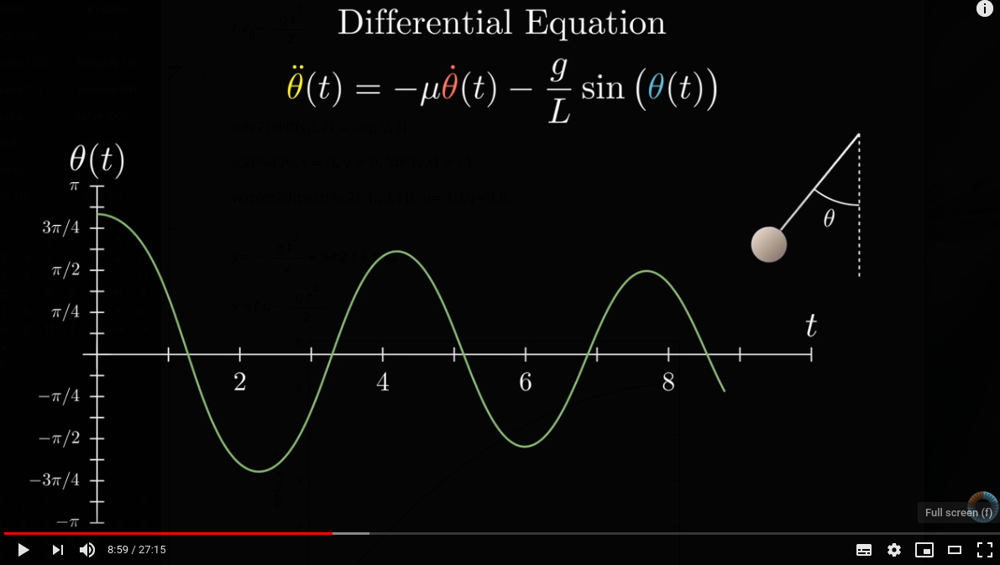
Figure 4: Pendulum Equation
< Collapse code block
eqn: 'diff(\theta, t, 2)= - \mu * 'diff(\theta, t) - g/L * sin(\theta);
20. Example 2 (Contd)
Convert second order ode to two first order ode: with independent variables \(\theta\) and \(\omega\) \(\frac{d\theta}{dt} = \omega\) \(\frac {d\omega} {dt} = \alpha = \frac{d^2 \theta}{dt^2} = -\mu \omega - \frac gL \sin(\theta)\)
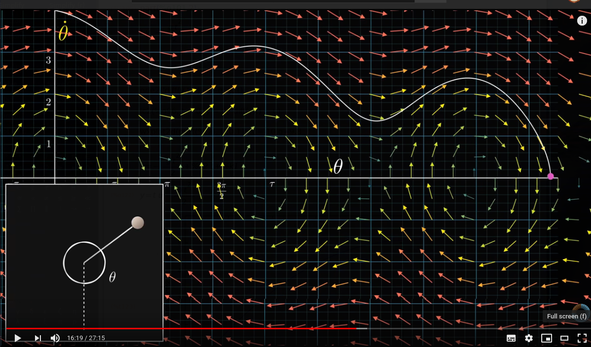
Figure 5: one intital condition
< Collapse code block
\alpha: -\mu * \omega - g / L * sin(\theta); variables: [\theta, \omega]; derivatives: [\omega, \alpha]; plotdf (derivatives, variables, [parameters, "g=9.81,L=1,mu=0.4"], [\theta, -%pi, 6*%pi], [\omega, -15, 15], [direction, forward], [sliders, "mu=0:2"])$
21. Sums and Products
- Arithmetic series
Geometric series
< Collapse code block
s: sum(1/k^2, k , 1 , inf), simpsum; tex(s);
\[{{\pi^2}\over{6}}\]
22. Example : Economics - Linear Gradient Series
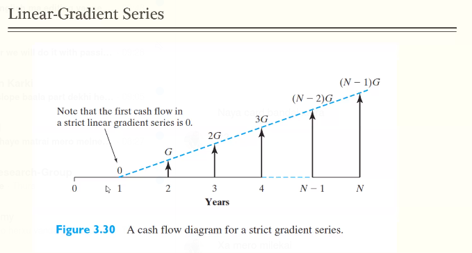
< Collapse code block
P = sum ( G*(y-1)/(1+i)^y, y, 1 ,N);
load("simplifysum")
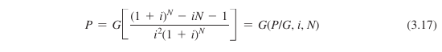
Figure 6: linear gradient formula
23. Example : Economics - Geometric Gradient Series
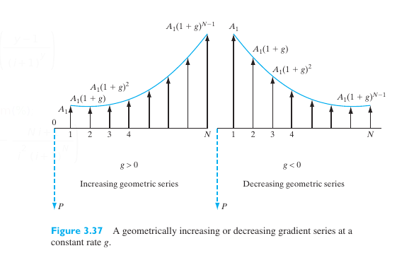
Figure 8: geometric gradient
< Collapse code block
P = sum(A_1 * (1+g)^(y-1) / (1+i)^y, y, 1, N);
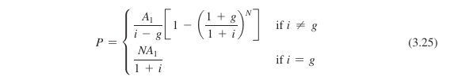
Figure 9: solution
24. Other things
- Taylor expansion
- List, Matrices, …
- Functions
- Control Statements, Loops
- Laplace Transform
25. Packages
- Tools not loaded by default
- Extra tools from users
25.1. Simplex
< Collapse code block
load("simplex"); maximize_lp(x_1 + 2*x_2, [x_1-x_2 < 5, x_2 < 4]);
26. Mathematica
The BOSS of this field.
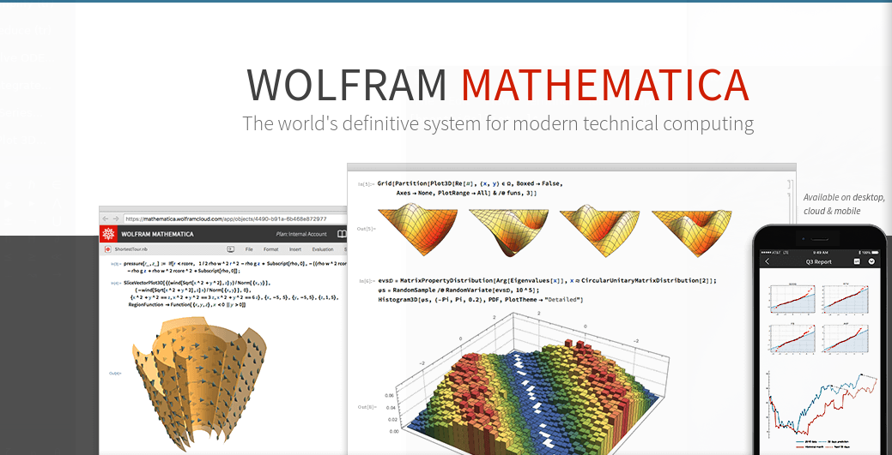
Figure 10: Mathematica
26.1. Try online at
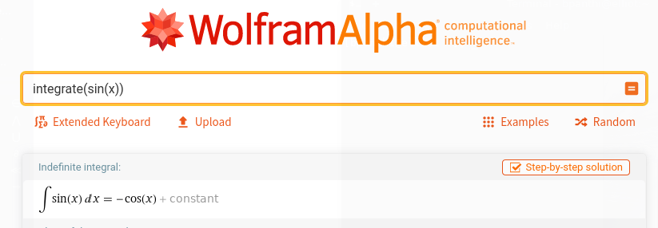
Figure 11: Wolfram alpha
27. Maple
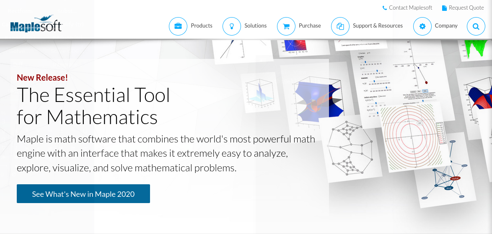
Figure 12: Maple
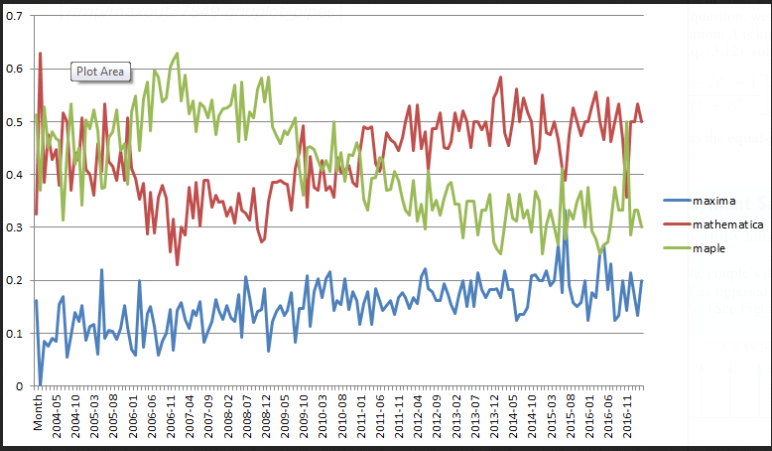 (Source)
28. Maxima vs ?
30. I don't know what this is
< Collapse code block
a1: matrix([0.85,0.04],[-0.04,0.85])$ a2: matrix([0.2,-0.26],[0.23,0.22])$ a3: matrix([-0.15,0.28],[0.26,0.24])$ a4: matrix([0,0],[0,0.16])$ p1: [0,1.6]$ p2: [0,1.6]$ p3: [0,0.44]$ p4: [0,0]$ w: [85,92,99,100]$ ifs(w, [a1,a2,a3,a4], [p1,p2,p3,p4], [5,0], 50000, [style,dots]);
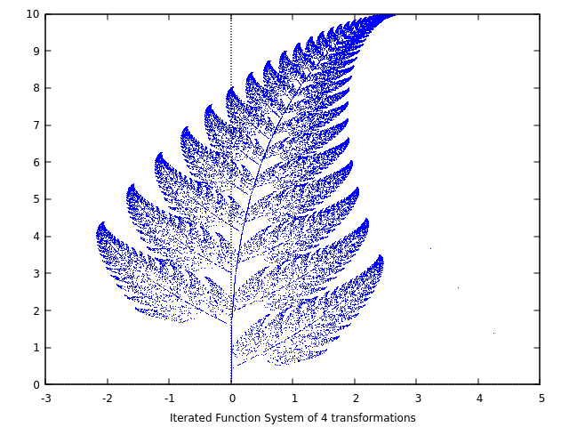
31. Lists & Matrices
[ _ , _ , ….]
append(L, L2) append(L, 3) used to add element to a list
L[i]
length(L)
M : matrix([ ], [ ] , [ ]); invert(M); echelon(M); copymatrix()
Matrix multiplication: M.R
addrow() addcol() ident(n)
M[1,2]
32. Functions
< Collapse code block
f(x) := x^2; f(x+1);
33. Control
33.1. IF THEN ELSE
if then else for piecewise function
f(x) := if 0<x and x<1 then x2 else 12
33.2. FOR Loop
m:0; for k:0 thru 100 step 0.5 do m:m+k
33.3. Block
block( m:0, for k:0 thru 100 do m:m+k, m );
s(x) := block( m:0, for k:0 thru s do m:m+k, m );